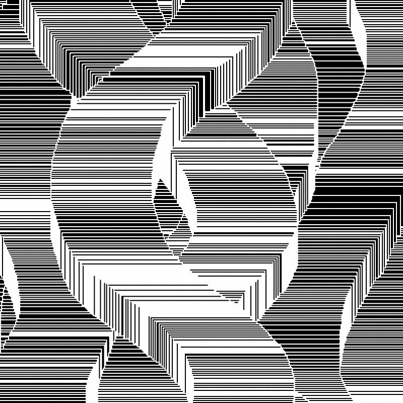
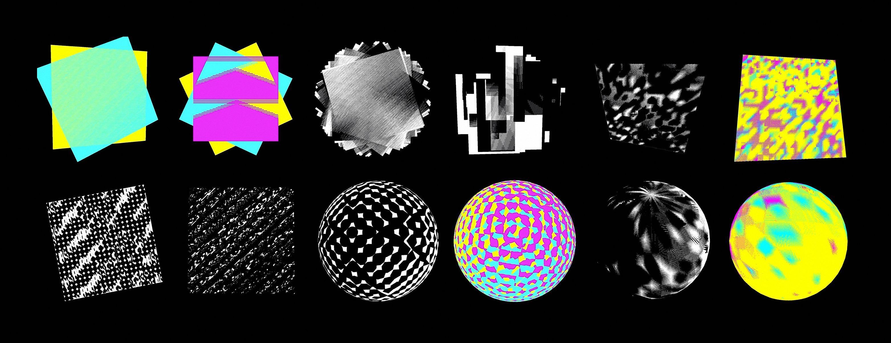

What experiment did I do?
Mouse XY: an experiment in which the construction of pattern is made viable through mouse movement. Double click to reset current canvas. Right click to save the image.
A JavaScript library called p5.js is used in this experiment [
more info
].
⇧ Example canvases of 'Mouse XY' by Nora Zhao (2019).

⇧ Example output of 'Mouse XY' by Nora Zhao (2019).
What are the strengths and weaknesses of this experiment?
1 Strength: it’s responsive and playful.
2 Weakness: it’s highly reliant on manual input. Therefore, output quality may vary depending on the skill of the ‘painter’ and effort put in ‘painting’ the picture.
How to solve it?
To build a program which functions automatically (generative).
What demonstrated its viability?
Distinction Machine: a project by Kim Albrecht which explores computational behaviour under ambiguous situations. Geometries of different colours are positioned at the same location to produce pattern [
more info].

⇧ Models of 'Distinction Machine' by Kim Albrecht (2019).
What technique was used to generate its dynamic output?
Z-fighting: a phenomenon in 3D rendering which occurs when two or more layers are positioned in identical or proximate positions. The colours ‘fight’ with each other to be shown on screen pixels and result in a flickering rasterisation effect.
What coding tool was used to construct these scenes?
Three.js: a JavaScript library for creating and displaying animated 3D computer graphics in web browsers [
more info].